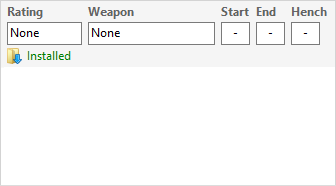
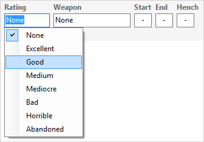
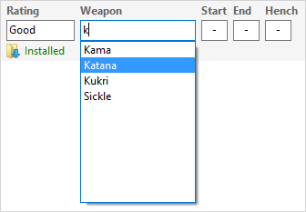
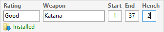
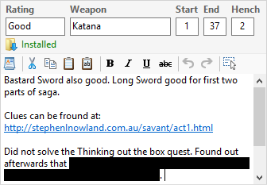

The Mod Information panel provides an area for you to make notes and record details about your Mods while you are playing and after you complete a Mod.

- Record the link to the Mod's download page.
- Click in the Rating box and select your rating for the game.

- Click in the Weapon box and select the best weapon you found in the game (useful information if your character uses Weapon Specialisation). You can start typing the weapon's name to avoid scrolling through the long list of weapon types.

- Click in the Start, End and Henchman boxes and type in the level that you started the game, your level at the end of the game and the maximum number of henchman you were allowed to have at the same time.

- Click in the Notes area and type any information you want to remember.

Related Topics
Download and install Neverwinter Vault Projects
Download and install Mods from other sites
Add a new Mod
Record a Mod's Web Page Link
Add downloaded files to a Mod
Reduce file clutter
Review Mod information in added files
Create Mod Installers
Customise Mod Installers
Manage Mod file conflicts
Install Mods
Uninstall Mods
Deal with Mod updates
Make Mod notes and record information
Publish Mods
Add Mods from downloaded files
Surazal's Mod notes